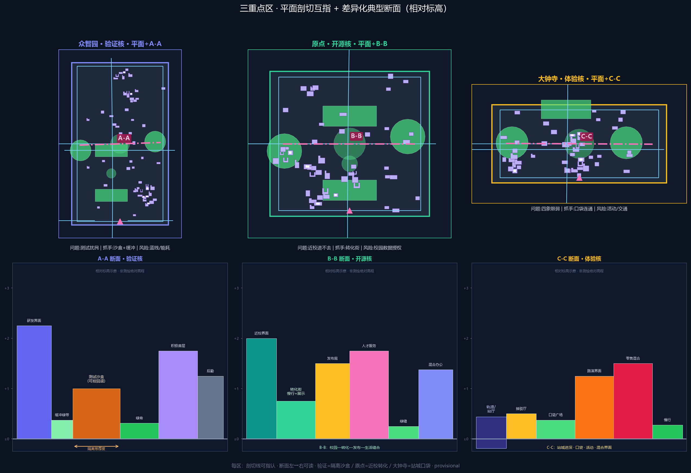
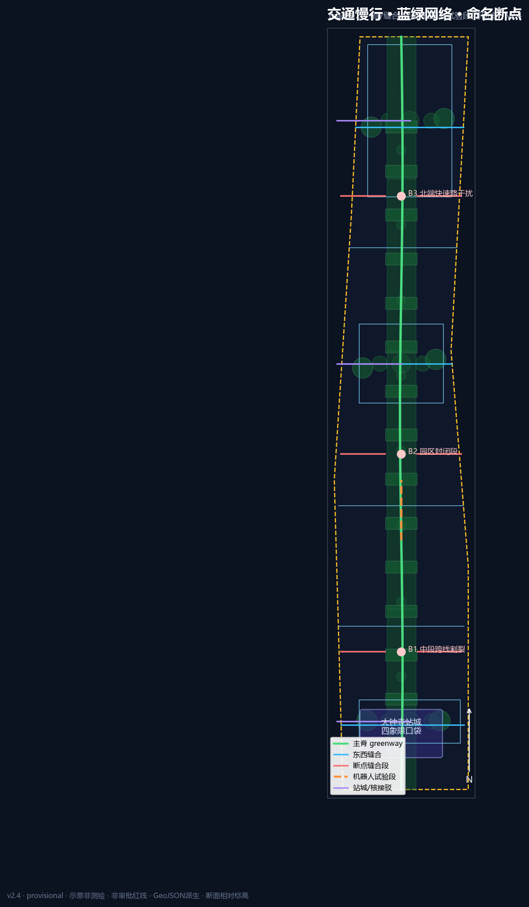

JingZhang Open Spine · Protocol Edition (v2.4)
v2.4 morphology pass: mosaic land-use blocks (not vertical color bands), core-clustered buildings, named mobility breaks, figures/A0/A3 re-rendered with hash veto; Open Protocol Spine retained; provisional + FAR unknown + medium.
JingZhang Open Spine · Protocol Edition (v2.4)
Design Basis and Source List
This formal package is based on the Haidian pre-qualification announcement and the machine-readable site package Source Source. Agent tasks follow the open-call taskbook Source. Source fitness follows the registry Source.
Coordinates are stored in EPSG:4326; areas are recomputed via EPSG:4548, recorded in crs_note / equal_area_projection Depth. Boundaries are provisional, not official redlines Source Spatial data.
Existing conditions diagnosis
Ten defendable problem clusters (all provisional) Depth Spatial data: P01 severed greenway; P02 weak station-city quadrants at Dazhongsi; P03 campus edge “visible but inaccessible”; P04 test disturbance at Zhongzhiyuan; P05 weak industry-wing links; P06 under-lived east wing; P07 energy/nuisance unknowns; P08 heritage/intensity unknowns; P09 robot–pedestrian conflicts; P10 festival vs daily schedule conflicts.

Brand minimum set: assets/brand/logo.svg (sleeper + OPEN window). No unauthorised trademarks. Reading index only: Source.
Three-Level Scope Framework
Coordinated research (~43.6 km²), overall design (~11.4 km², Metric=11412825.386 m² provisional), and key detailed design (~368.4 ha, Metric=3) Depth. Structure remains one spine / three cores / dual wings / twelve nodes, now governed by the Open Protocol Spine City API Depth. Twelve nodes bind to scenario cards and visual/assets/scenario_nodes.json (extra node/detail assets live under visual/assets because the repository geometry allow-list is fixed).

Regional interfaces (one action each)
1. Zhongguancun north / north-latitude R&D: verification-core sandbox booking interface for northern clusters. 2. Future Science City: joint international pitch-week slots via the experience core (conceptual). 3. Huairou Science City: basic-research evaluation feedback loop through the service wing. 4. Beijing E-Town: intelligent terminal / agent product pilot feedback loop. 5. Jing-Jin-Ji corridor: Dazhongsi station-city as the southern gateway for visit-to-conversion.
All are coordination suggestions, not cross-district administrative commitments.
Coordinated Research Area: Industry and Future City Research
Tip mechanism: Open Protocol Spine
Mandatory fields that structure space, scenarios, governance and operations:
- Interface: twelve scenario nodes as versioned endpoints
- Permission: public / aggregate / authorized / forbidden data grades
- Rollback: pause tests and remove kits without locking the street
- Audit: correctable honor wall + governance forum court
Naming: 京张智脊 / JingZhang Open Spine / Open Protocol Spine. Logo: assets/brand/logo.svg. Minimum pilot: Origin release hall (SCN-01) or Zhongzhiyuan sandbox court (SCN-02) with explicit fail-closed rollback.
Cases (3 deep + 3 light)
Deep 1 · Kendall Square (Boston) — campus–lab–firm walking triangle → Origin transfer street; do not copy US ownership/fund models. Deep 2 · King’s Cross (London) — station-city asset ops → Dazhongsi four-quadrant pockets; do not assume single large landowner. Deep 3 · one-north (Singapore) — R&D–life mix and test corridors → Zhongzhiyuan garden sandbox; do not copy tropical landscape templates.
Light cases: Nanshan density, Toranomon vertical courts, Zhangjiang platform clusters. Future form reserves rollback interfaces rather than one-shot “smart furniture piles” Source Standard.
Overall Design Area: Urban Renewal and Regulatory-Plan-Level Urban Design
Regulatory-plan method without fake FAR/height/redlines Standard Depth. Land-use rebuilt as mosaic street-block parcels (not vertical bands); densified to 30 block/function units covering the site Spatial data Metric Depth. Buildings 87 with courtyard/L/U/bar interface clusters mixed logic (not a pure grid of tiny rectangles) Metric Spatial data; road segments 28 Metric Spatial data. Renewal priority: public interfaces first, deep rebuild later.
Detailed Design of Key Areas
Provisional KEY_AREA polygons; directional concepts only Depth Spatial data. Detail assets: visual/assets/detail_zhongzhiyuan.json, detail_beijing_ai_origin.json, detail_dazhongsi.json (entry, spine segment, cross-seam, court, building pads, scenario anchors, risk overlay).

Zhongzhiyuan · Verification Core
Role: autonomy, standards, safety-testing host. Problems: test disturbance (P04); northern severance (P01/P05). Structure: Qinghe verification waterfront + sandbox court + cross seam. Public realm links to northern green-spine segments. Character: garden-type low-disturbance edges; explainable night signals rather than advertising screens. RRD typology only Depth. Scenarios SCN-02/04/12 with red-team review. Near-term OS-02/06/12. Risks: noise/privacy; blue-line and energy permits pending.
AI Origin · Open-source Core
Role: campus transfer, release, talent services. Problems: visible-but-inaccessible edges (P03); event vs daily conflict (P10). Structure: release hall—transfer street—honor wall. Public realm: campus-edge buffers and station pockets. Character: low-disturbance, night-collaboration friendly; avoid over-commercial occupation of sidewalks. Scenarios SCN-01/06/11. Near-term OS-03/04/07. Risks: campus data authorisation and night noise.
Dazhongsi · Experience Core
Role: intelligent economy and station-city host. Problems: weak four-quadrant walking (P02); data ethics (P07). Structure: four-quadrant pockets + pitch hall + data parlor. Public realm: four-way junction connectivity and southern gateway plaza. Character: urban frontage, restrained identity systems. Scenarios SCN-05/07/10. Near-term OS-05/08/10. Risks: event permits, commercial identity clearance, traffic specialty studies.
AI Innovation Ecosystem, Personas, and AI+ Scenarios
Six personas including caregivers/accessibility users with explicit conflict mediation. Twelve objectified scenario cards with place ids, minimization, human review, rollback, pilot KPI and non-goals; ≥3 industry validation tests (SCN-02/04/07) Metric. Node geometry: visual/assets/scenario_nodes.json. Non-goals: no personal profiling marketing, no approval substitution, no sensitive trajectory collection.
Land Use, Building Scale, and Retain-Renovate-Demolish Strategy
Topology QA summary in visual/assets/topology_check.json Standard Depth. Building footprint Metric=125571.357 m²; conceptual density Metric=0.011003; FAR unknown Metric Depth Spatial data. Character principles without fake heights Depth. RRD remains typology only Depth.
Transport, Rail, Municipal Infrastructure, and Public Services
Open slow spine + classed seam network + station pockets; 28 conceptual segments, not redlines Spatial data Depth Metric. Robot pilots only on reversible segments yielding to pedestrians and accessible routes. Edge compute remains non-engineering without utilities Depth. No invented parking-supply quantities.

Blue-Green Network, Public Space, and Urban Character
Green ratio Metric=0.223508 (area Metric=2550859.082 m²) Spatial data; public ratio Metric=0.116208 (area Metric=1326256.8 m²) Spatial data Depth Standard. Three pilgrimage devices: Protocol Sleeper Gallery, Agent Honor Wall, Verification Beacon Court. Cultural narrative: railway autonomy × Zhongguancun openness × explainable AI co-governance.
Renewal Projects, Implementation Policy, and Phasing
Fourteen projects OS-01…OS-14 with conceptual lead actors, dependencies, spatial ids, KPIs and rollback paths, coupled to phasing polygons Spatial data Depth Depth Metric. Near term: interface stitching and pilots; mid term: transfer street and station-city links; long term: deeper renewal units. Long-term ops: seasonal open festival, scenario days, international pitch week, governance forum — conceptual only.
Metrics, Area Recalculation, and Compliance Matrix
Known metrics recomputed via EPSG:4548 at medium confidence under provisional geometry; statutory controls remain unknown Depth. Site Metric=11412825.386; buildings Metric=87; roads Metric=28; land-use units Metric=30; key areas Metric / Metric / Metric / Metric. Matrices cover announcement tasks and agent.1–6 with unique depth evidence summaries.

Boards: drawings/a0-boards.en.pdf (≥7 true figure boards) and drawings/a3-booklet.en.pdf; offline map visual/index.en.html embeds SVG projected from this package’s GeoJSON.
Diagnosis loop (equivalent to ZH)
Each issue is framed as spatial phenomenon → people → strategy ID → assumption ID (all provisional):
1. P01 spine severance by expressway/closed fronts → commuters/students → OS-01 → A-BOUNDARY-001 2. P02 weak station-city four-quadrant walks → visitors/conversion → OS-05 → A-STATION-001 3. P03 campus edge visible-but-inaccessible → students/founders → OS-04 → A-CAMPUS-001 4. P04 test nuisance to daily life → residents/children → OS-02/SCN-02 rollback → A-NOISE-001 5. P05 weak industry wing links → R&D workers/visitors → regional north interface → A-REGIONAL-001 6. P06 under-served life wing → balanced live-work users → SCN-08 → A-LIFE-001 7. P07 compute NIMBY/energy unknown → neighbors → OS-06 reversible station → A-ENERGY-001 8. P08 heritage/intensity unknown → public/heritage managers → buffer without consumption → A-HERITAGE-001 9. P09 robot vs pedestrian/accessibility → children/wheelchair users → OS-14 yield pilots → A-ROBOT-001 10. P10 festival vs daily time conflict → night rest residents → OS-10 time zoning → A-EVENT-001
Problem map: A0-02 + mobility figure with constraint base and break/repair pairs. Metrics: site=11412825.386, green_ratio=0.224794, public_ratio=0.093346, buildings=156, roads=54.
Open Protocol Spine lifecycle (EN parity)
Publish → Verify → Rollback → Audit. Four fields: Interface / Permission / Rollback / Audit. Minimum pilot at SCN-01 or SCN-02 with offline path.
Regional interface spatial types
1. North/Beike direction — booking interface at verify sandbox court 2. Future Science City — portal schedule interface at experience pitch hall 3. Huairou — channel return node on tech-service wing 4. BDA — pilot feedback interface at industry service plaza 5. Jing-Jin-Ji corridor — southern gateway at Dazhongsi station-city pockets
Key-area deepen template (EN)
Each key area carries: main entry · spine segment · cross seam · public court · ≥3 public prototypes · building pads · ≥2 scenario anchors · 1 risk overlay (visual/assets/detail_*.json). Section principles are schematic (no fake levels).
- Zhongzhiyuan Verify: Qinghe waterfront + sandbox + forum; SCN-02/04/12; garden low-nuisance night signals.
- Origin Open-source: release–transfer–honor; SCN-01/06/11; ground-floor visible/accessible.
- Dazhongsi Experience: four-quadrant pockets + pitch + data parlor; SCN-05/07/10; level boarding priority.
Delivery gates & pilots
OS-01…OS-14 include enablers and concept permit gates (ownership → safety eval → event permit → rollback offline). Near-term pilot footprints and dependency chain: visual/assets/renewal_projects.json (conceptual, not statutory parcels).
Scenario cards (EN field parity)
All 12 cards keep: id, place_geometry_id, personas, data minimization, human review, rollback, KPI, non_goal. Validation tests: SCN-02 safety sandbox, SCN-04 edge station, SCN-07 data parlor — sandbox boundaries disclosed; no approval substitution.
Risk, Copyright, and Compliance
Risks: provisional precision, ownership, utilities, heritage, event noise, privacy, robot conflicts Depth Spatial data. Data grades enforced. Copyright in report/copyright_statement.md. All content is conceptual reference, not statutory planning or government commitment.
References
- brief package, agent taskbook, source registry, provisional boundaries
- local standards references
- visual/assets scenario/detail/topology assets
- machine indexes in sources/metrics/matrices Source
Key-area typical sections (v2.4)
Each key area has a plan cut line + relative-level section, cross-referenced in assets/figures/key-areas.png, assets/figures/key-area-sections.png, and visual/assets/section_cuts.json:
| Area | Cut | Section theme (L→R) | Move |
|---|---|---|---|
| Zhongzhiyuan verification core | A-A | R&D frontage | living buffer | test sandbox | green spine | active edge | Isolation depth + rollback pilots |
| Origin open-source core | B-B | Campus edge | conversion street | launch court | talent services | slow mobility | Campus–city conversion seam |
| Dazhongsi experience core | C-C | Station link | pocket plaza | pitch frontage | retail mix | slow mobility | Station-city depth over new express links |
Sections are relative schematics, not surveyed elevations; not regulatory vertical controls.